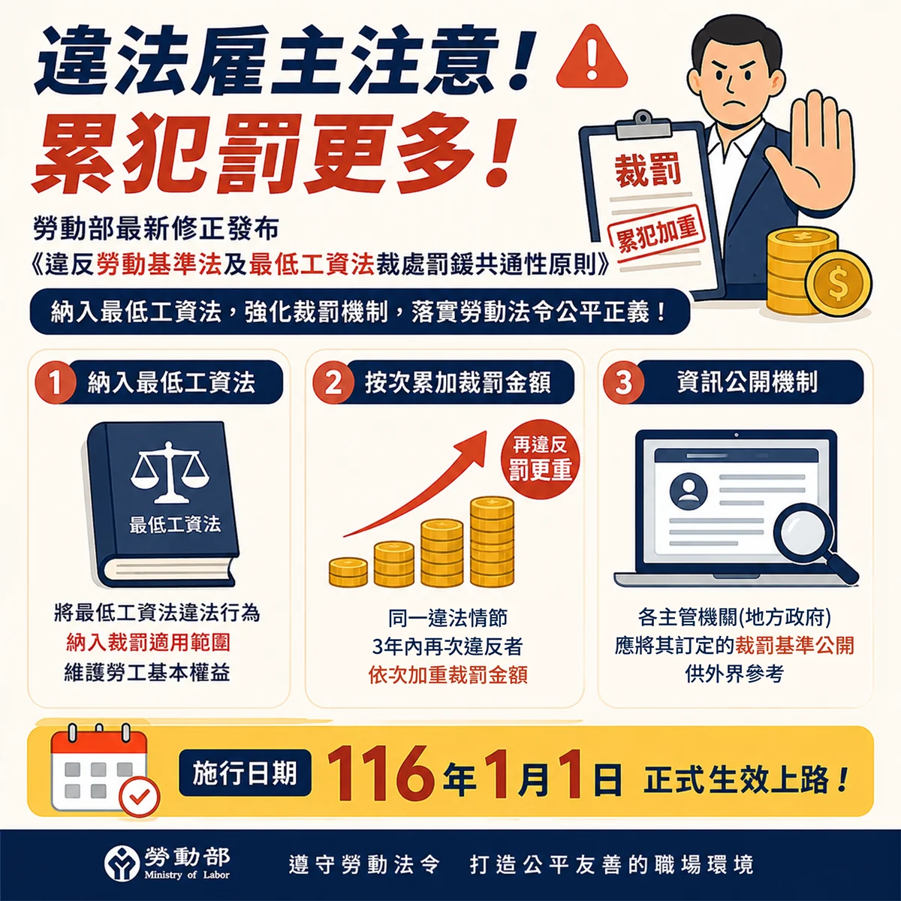

勞動部修正發布《違反勞動基準法及最低工資法裁處罰鍰共通性原則》，把違反最低工資的規定納入裁罰標準，雇主再犯時罰鍰會按次累加。新規定自 116 年（2027 年）1 月 1 日施行。

為什麼要修？最低工資法從 113 年實施後，政府一直輔導事業單位遵守。但各縣市對「同一條文再次違法」的累加罰鍰算法不一樣，勞工團體也反映這個問題，所以勞動部和地方政府溝通後，訂出全國一致的標準。
這次的重點：
- 再次違反同一條文，計算期間統一為 3 年。3 年內再犯幾次，就要列入按次累加罰鍰。
- 3 年內違反《勞動基準法》的基本工資規定，和違反《最低工資法》，視為違反同一規定。
- 針對上市櫃公司、實收資本額超過 1 億元的事業單位，以及醫學中心等特定對象，違反最低工資或工時等重要規定，罰鍰最低從新臺幣 5 萬元起算。
- 各縣市政府要把自己的裁罰審酌標準（包含按次累加的算法）公開在官方網站，勞動部官網會彙整各縣市的連結。
如果發現雇主違反《勞動基準法》，或給的工資低於最低工資，可以向當地勞工行政主管機關申訴，也可以撥打勞工申訴專線 1955。
資料來源：勞動部。原公告網址：https://www.mol.gov.tw/1607/1632/1633/100074/post